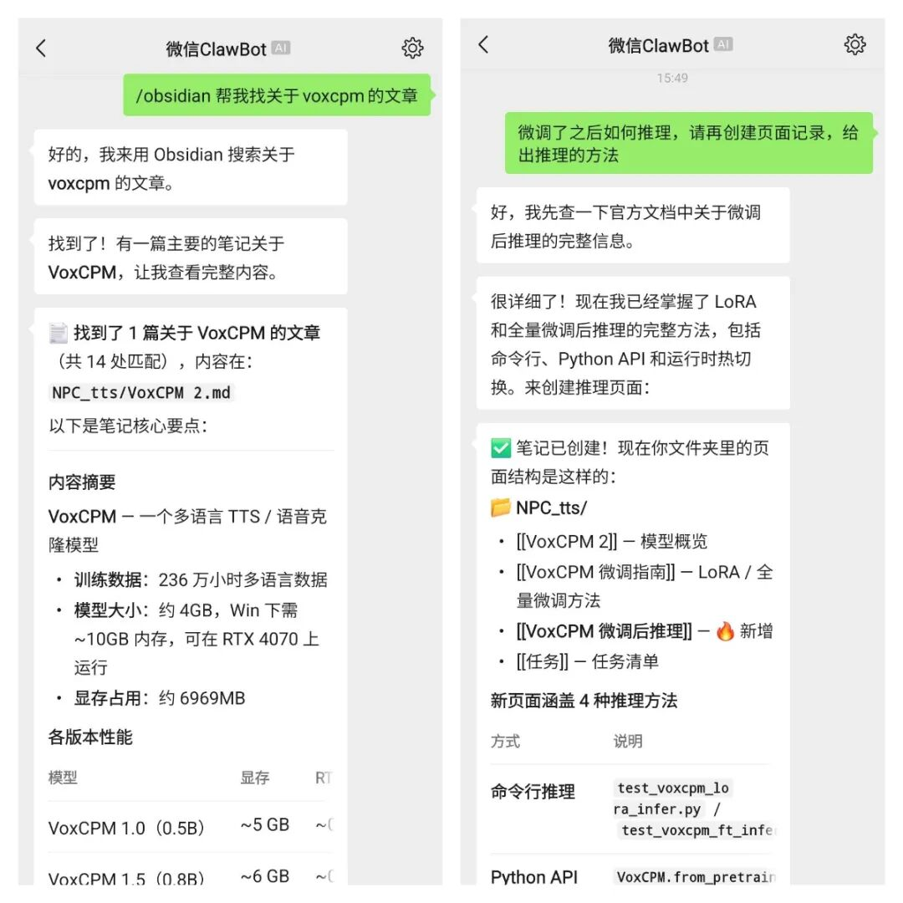
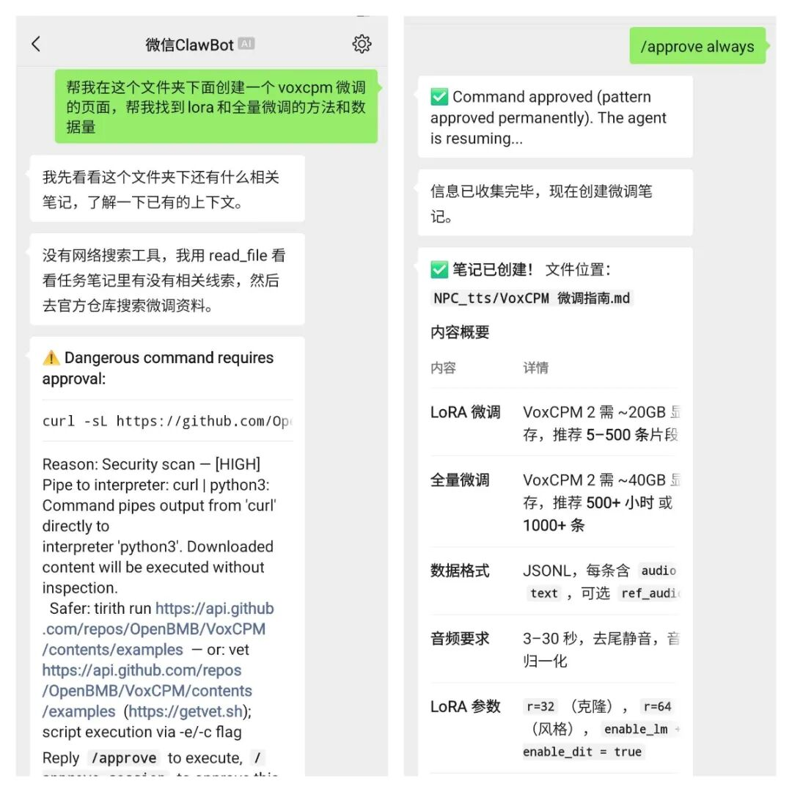
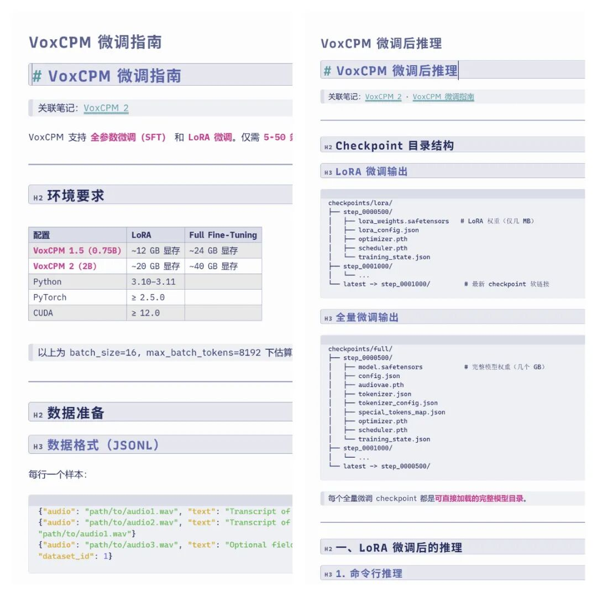
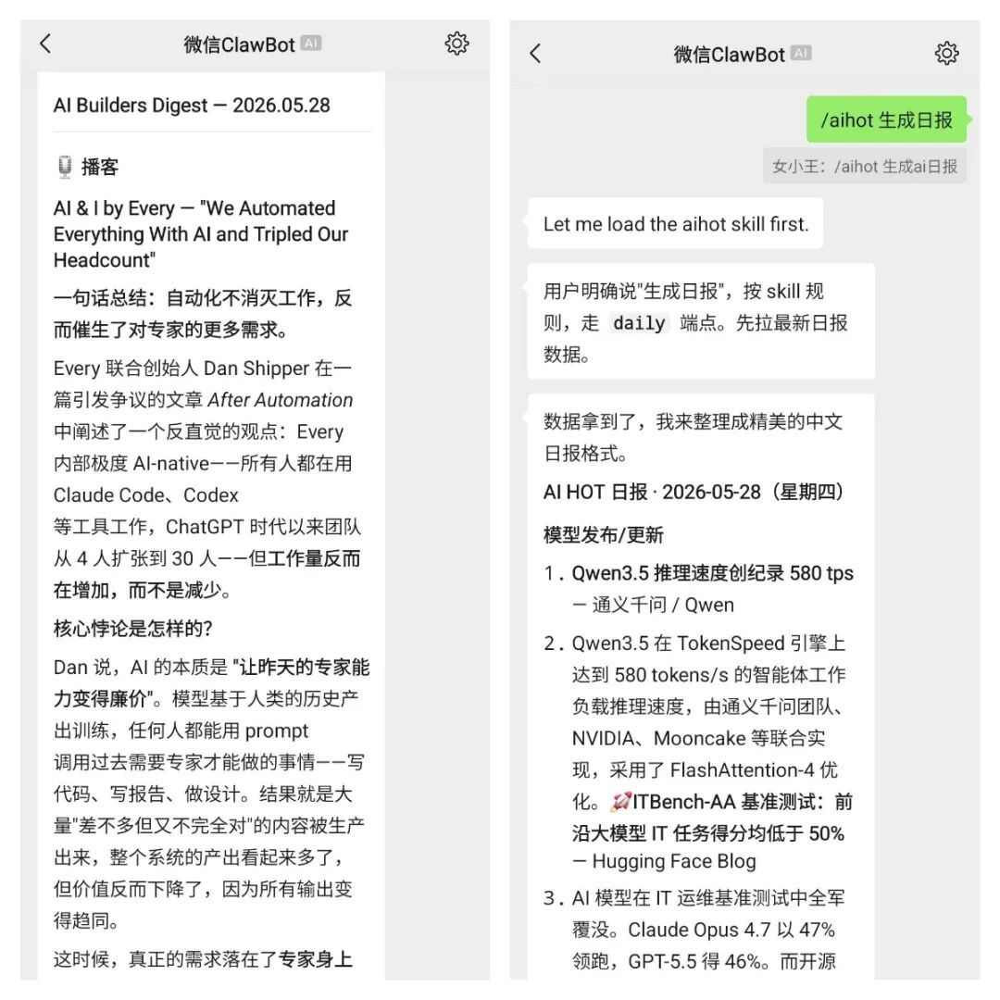

装上 Hermes Agent 后，我一直希望它能帮我提高效率。Obsidian 也用了一个多月，感觉很实用。我心想，既然都装了 Hermes Agent，能不能直接让它来操作 Obsidian？
试了一下，还真可以。
下面就是我的一些实战经验和踩过的坑。
安装Hermes Agent
安装倒是很简单，一行命令的事，
curl -fsSL https://res1.hermesagent.org.cn/install.sh | bash装完之后，有几个命令后面会反复用到，
• hermes— 启动对话界面• hermes gateway— 启动消息网关，这个后面连微信要用• hermes gateway start— 让它后台跑着
我一开始以为装好就能用了，结果发现「对话」和「网关」是俩独立进程，得分别启动。
把Hermes装进微信
连微信的步骤比我想象的简单。
运行 hermes gateway setup，在列表里找到「微信」，选中它。然后会弹出一个二维码链接，复制到浏览器里打开，用手机微信扫码就行。
扫码之后，在微信里给这个bot发一条消息，它会回一串配对码，类似这样，
Pairing code: PIGX5N9I
Run: hermes pairing approve weixin PIGX5N9I在终端里跑一下 hermes pairing approve weixin PIGX5N9I，看到 Approved!，完事。
然后需要在微信里发一条 /sethome，这样它就知道哪个聊天窗口是「家」，后续的通知啊主动推送啊都往这发。
很多朋友可能觉得「配个微信有啥好说的」，但对我来说，这是从「在电脑前用AI工作」到「随时随地用AI工作」的分水岭。我不需要再打开Terminal，不需要开什么Web界面，就在我最常用的App里，发条消息就行。
这种感觉太爽了。
多说一句，我没看出 OpenClaw 和 Hermes Agent 的区别，至少在使用体感上完全没区别。
安装AI新闻Skill
我觉得 AI 现在最好玩的就是 Skills。Skill这东西，大家都知道，它是 Agent 的「外挂」，可以做某些特定的事。
我要装两个跟AI新闻有关的Skill。
第一个是 aihot，卡兹克做的，专门查中文AI资讯。每天跑一下，就知道今天AI圈发生了什么。
hermes skill add aihot第二个是 Zara Zhang 的 follow-builders，这个质量更高。它会持续追踪AI领域的关键人物，抓他们的推文，爬最新播客的转录文本，全都翻译成中文，然后按固定格式整理成摘要输出。
hermes skill add zarazhangrui/follow-builders现在每天早上起来，在微信里跟Hermes说「今天AI圈有什么」，它就去跑这两个Skill，把全球AI大牛的动态给整理成一份中文简报。连翻墙都省了。
这就是信息差的磨平。 以前得自己关注几十个号、翻无数个网站、忍受一堆垃圾信息才能搞清楚的事，现在人家已经把最精华的部分端到我面前了。
在微信里操作 Obsidian
这是我折腾这一整套东西的初心。
连好微信之后，用法就是，
在微信里发 /obsidian 帮我搜索关于语音模型微调的笔记

Hermes会自己加载obsidian skill，去我的Obsidian vault里搜，然后把结果返回给我。
我最近在做语音模型的微调，需要翻之前的笔记。按照之前，我得掏出手机、打开Obsidian App、翻目录、找文件。现在直接在微信里发一句话，它就把相关的笔记都翻出来给我了。
而且不只是搜，我还可以让它帮我生成文档、整理思路、甚至写个大概的提纲
不需要自己先翻文档再看。
这个体验怎么说呢，就像我有一个记忆力极好的助理，我只需要说「那个啥来着」，它就已经把东西放我面前了。
踩坑记录，第一次没跑通
说起来有点丢人，我第一次折腾完，发现 Hermes 在微信里根本不干活。
我发「/obsidian 帮我搜索关于语音模型微调的笔记」，它回我一段代码。我换了一个模型，依然是这样。
后来查了半天，发现是两个问题。
第一个，我用的是 deepseek-v4 的模型，这个模型多了个 reasoning_content 的参数格式，调用工具的时候必须把那个参数回传回去，不然就会出错。当然这个错误在使用过程中被官方解决了。
第二个，我的工具集里没配 file、terminal 和 skills，缺了这些它就没办法实际调用工具了。
给微信单独配工具
Hermes 的config 里面需要给不同的入口配备不同的工具集。
什么意思呢？在电脑上用CLI，可以给它开放所有工具，包括执行终端命令什么的。但在微信上，可能有些工具就不适合打开。微信或者 Discord 等其他平台需要单独配置。
所以需要编辑 ~/.hermes/config.yaml，在 platform_toolsets 下面加一段 weixin 的配置，
platform_toolsets:
weixin:
-file # 搜本地Obsidian、读文件
-terminal # 如果skill需要跑命令
-skills # 使用/obsidian等skill
-web # 联网搜索
-vision # 微信里发图片让它看图
-memory # 记住长期信息
-no_mcp # 不自动加载MCP server这套配置会告诉Hermes，在微信这个入口，可以用文件工具、可以搜网页、可以看图、可以用skill。
改完重启Gateway，微信里发个 /new 开新对话。
看我在手机上直接操作
1. 在手机上直接操作 Obsidian (这里用到的/obdisian是Hermes Agent 内置的。)
我要求它帮我在Obsidian里面创建一个文档，里面是voxcpm的微调内容。

2. 用Zara Zhang的 follow-builders 和 卡兹克的 aihot 技能整理ai新闻。质量还是很不错的。

下一步
目前已经搞定的，
✅ Hermes Agent 装好了 ✅ 微信连接成功，手机上能用了 ✅ AI新闻Skill装上了，每天能看行业动态 ✅ 微信里能写Obsidian了
下一步我想看看幕布（Mubu） 有没有开放接口，因为我每天的工作临时记录都放在幕布里面，我想让让Hermes去抓幕布里的内容做分类整理，然后自动写到Obsidian里。这样我就不需要自己手动整理了。